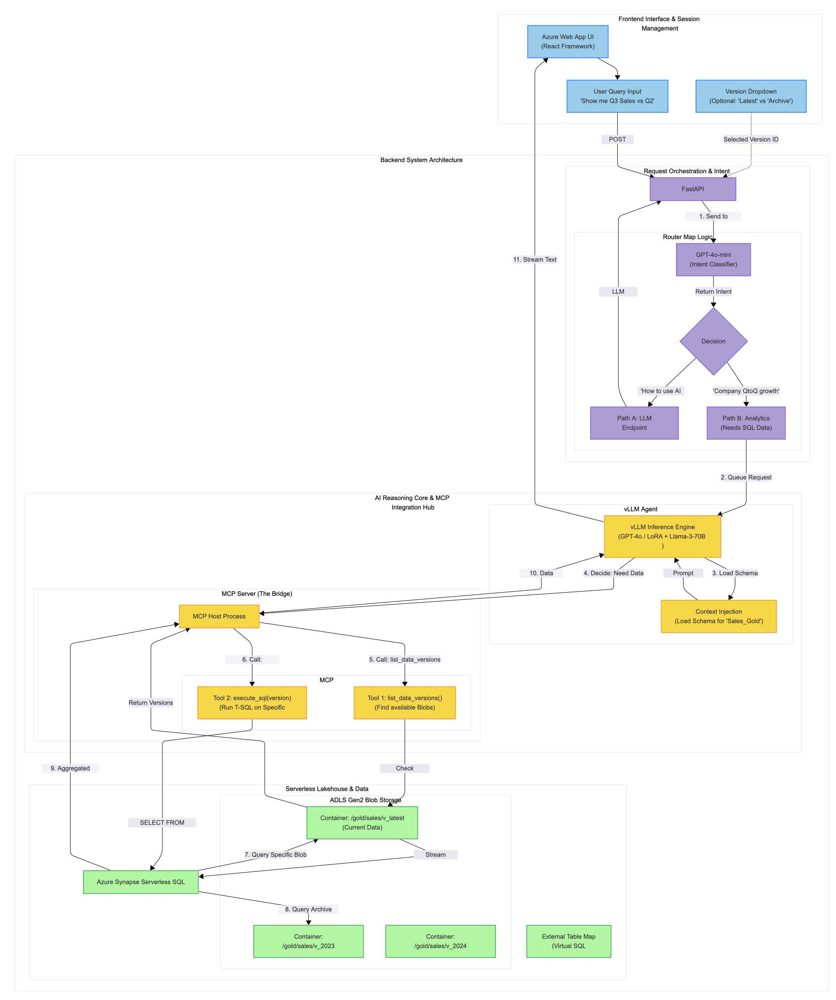

Key Achievements
- MCP-Driven Architecture: Designed a intelligent agent system using the LLM-powered model as Router and Model Context Protocol (MCP) server as the secure gateway, standardizing the interface between the orchestration layer and Azure Synapse for efficient SQL execution.
- High-Performance Inference (vLLM): Integrated vLLM to serve specialized open-source models for routing and intermediate reasoning, ensuring high throughput and cost-efficiency alongside Azure OpenAI.
- Scalable Enterprise Deployment: Engineered the platform within Azure Resource Groups to handle concurrent internal user sessions, leveraging serverless scalability to maintain consistent performance under fluctuating analytics loads.
- Optimized Data Management: Implemented a "Move Code to Data" approach using Serverless SQL, enabling the agent to query terabytes of data directly in ADLS Gen2 without costly data migration or latency overhead.
Tech Stack
AI & Inference
- Azure OpenAI (GPT-4o)
- vLLM (High-Throughput Serving)
- LangChain / OpenAI SDK
Integration & Backend
- Model Context Protocol (MCP) Server
- FastAPI + React
- Azure Container Apps
Data & Infrastructure
- Azure Synapse Serverless SQL
- Azure Resource Groups
- ADLS Gen2 (Delta/Parquet)
- Redis (Semantic Caching)
System Architecture
